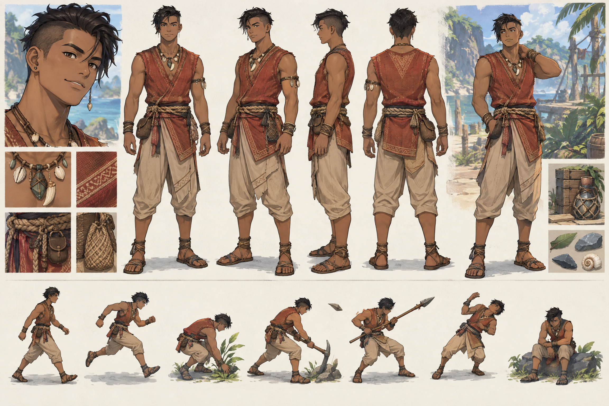
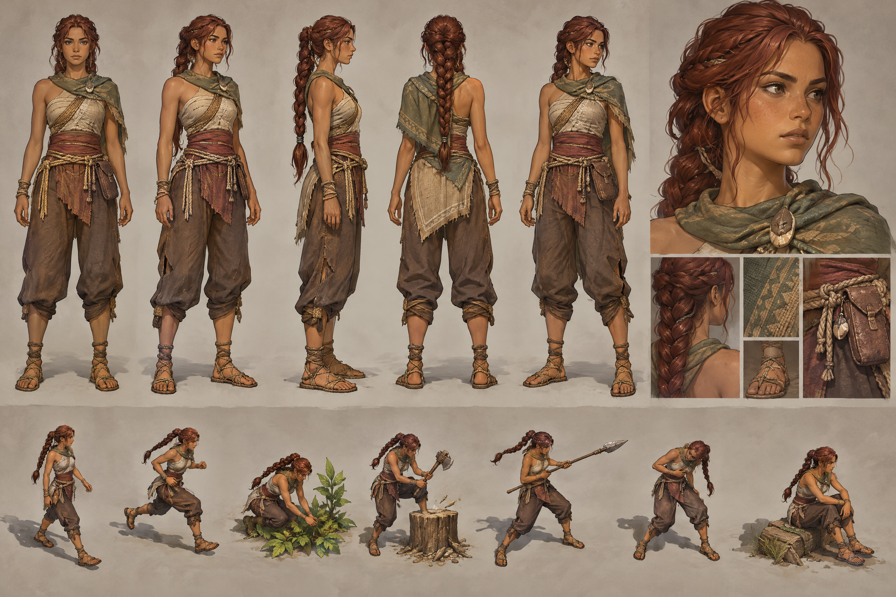
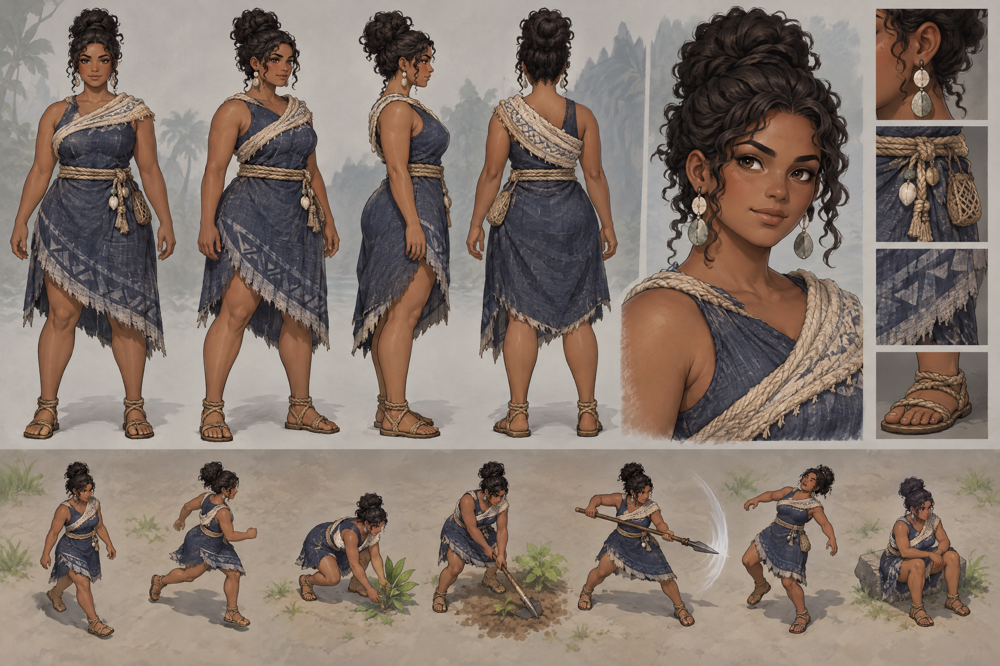
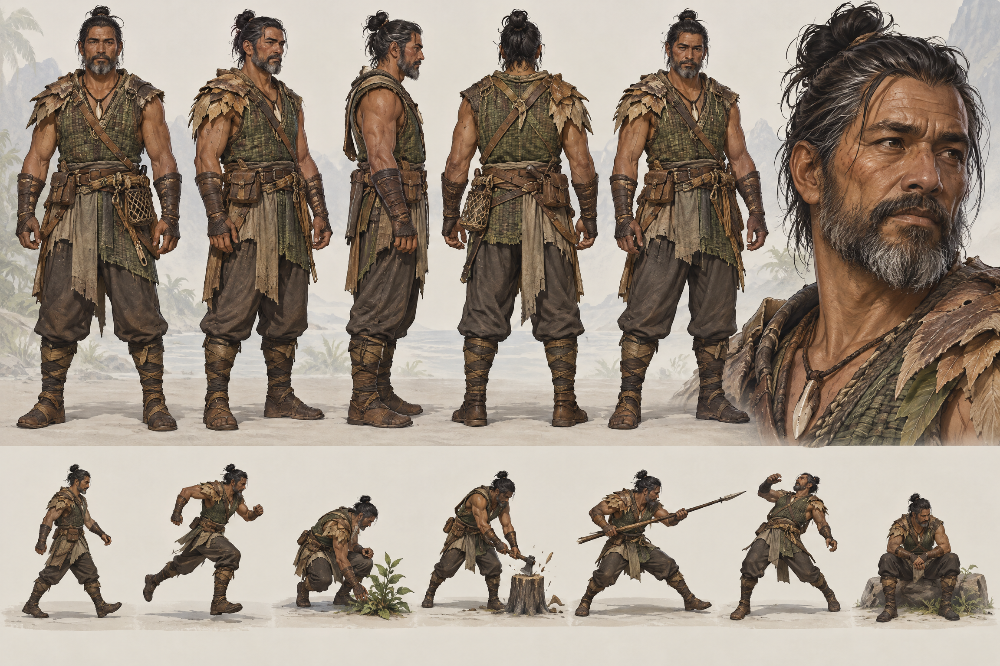
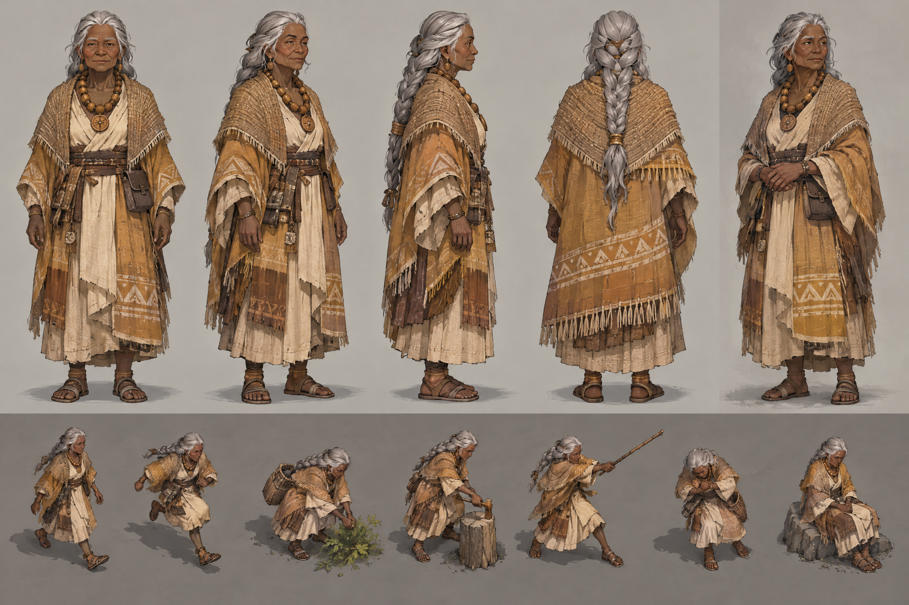
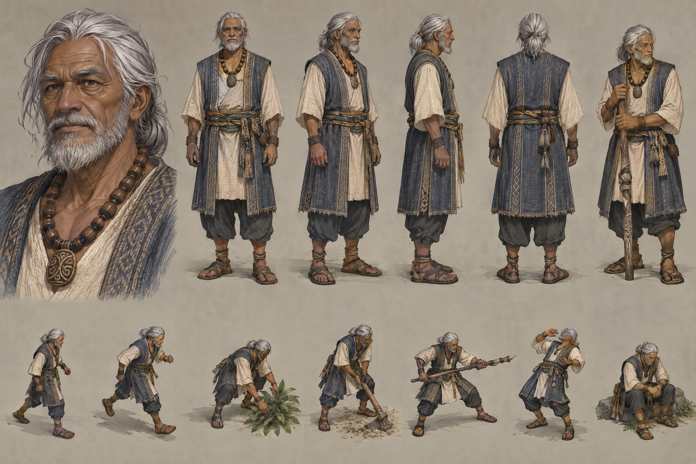

DEATH ISLAND — 2.5D TRIBAL CAST
Illustrated fixed-angle concept/reference package · experiment only · 6 sheets complete · 3 youth entries blocked

young_adult_male_01 22 · young adult

adult_female_slim_01 22 · adult

adult_female_fuller_01 25 · adult

adult_male_01 40 · adult

elder_female_01 70 · elder

elder_male_01 72 · elder
child_boy_01
10 · child
Generation blocked
10 · child
Generation blocked
child_boy_01
child_girl_01
11 · child
Generation blocked
11 · child
Generation blocked
child_girl_01
adolescent_boy_01
16 · adolescent
Generation blocked
16 · adolescent
Generation blocked
adolescent_boy_01